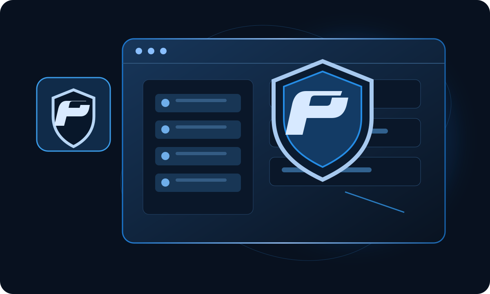

01
Модерация
Инструменты для контроля чата и обработки нарушений: предупреждения, ограничения, блокировки, очистка сообщений и журнал действий.
НаказанияЖурналЖалобы
Единая система для модерации Telegram-групп, управления доступами и проверки знаний команды. Меньше рутины — больше порядка.

ВОЗМОЖНОСТИ / 01
Функции для ежедневной работы администрации и поддержания порядка в Telegram-сообществе.
Инструменты для контроля чата и обработки нарушений: предупреждения, ограничения, блокировки, очистка сообщений и журнал действий.
Поиск профилей XenForo и проверка статуса наказаний участников.
Отдельные уровни доступа для каждой подключённой группы и контроль прав при выполнении команд.
Создание тестов, приглашения участникам, проверка результатов и назначение локальной роли при успешной сдаче.
Сводная информация о работе модерации, активности участников и подключённых группах.
ПРОСТОЙ ПРОЦЕСС / 02
Основные инструменты доступны через Telegram. Настройте группу, распределите права и используйте нужные команды.
Начать работу ↗Добавьте бота в Telegram-группу и выполните настройку.
Определите роли и разрешения для участников команды.
Используйте модерацию, тесты и статистику в повседневной работе.
БЫСТРЫЙ СПРАВОЧНИК / 03
Найди команду по названию или назначению. Нажми «Копировать», чтобы быстро перенести её в Telegram.
Показаны все команды
/helpСписок команд и краткая справкаОСНОВНОЕ/connectПодключение текущей группы владельцем ботаНАСТРОЙКА/settingsНастройки антифлуда и ссылок в группеНАСТРОЙКА/modlogЖурнал действий модерацииМОДЕРАЦИЯ/rolesСписок ролей и уровней доступа группыДОСТУПЫ/createtestСоздание теста для командыТЕСТЫ/testaddДобавление вопроса к тестуТЕСТЫ/sendtestОтправка приглашения участнику на тестТЕСТЫ/testresultsПросмотр результатов тестированияТЕСТЫСписок ознакомительный. Фактическая доступность команд зависит от версии бота, прав пользователя и настроек группы.
VISE RUSSIA / COMMUNITY TOOLS
Откройте бота и изучите доступные команды.
Открыть F-rum-Bot ↗